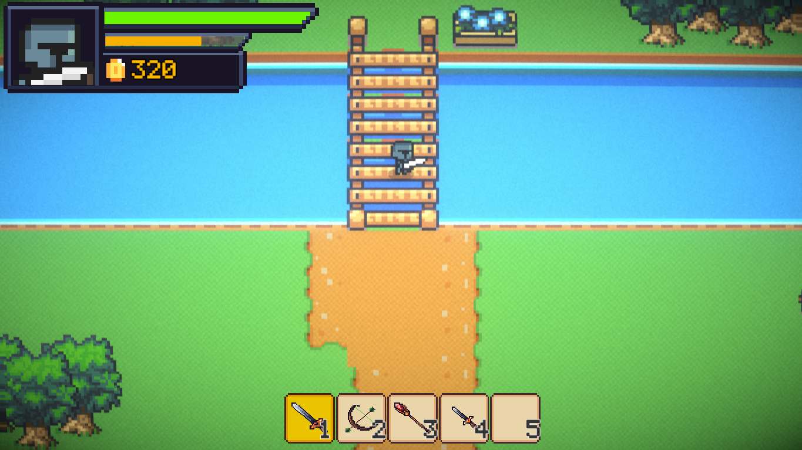
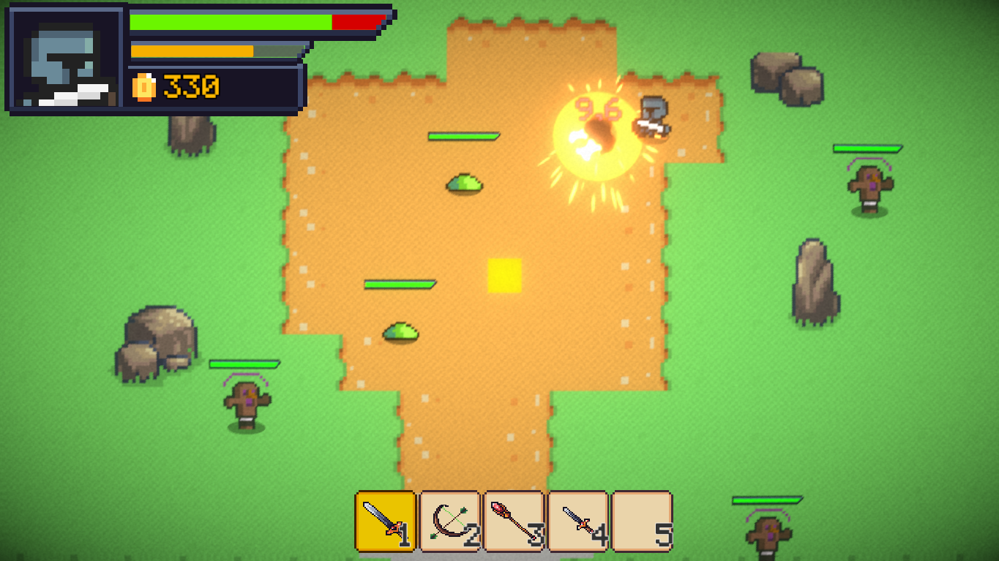
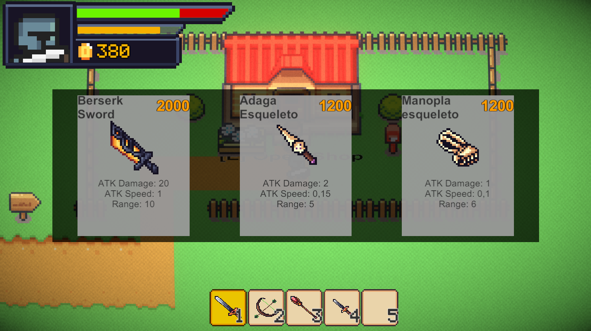
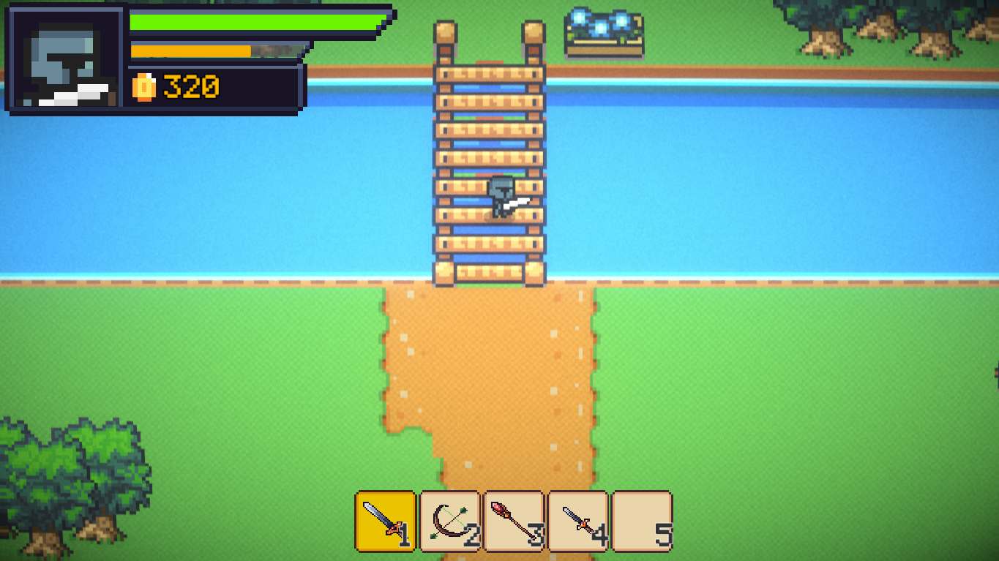

Sobre o Top Down
Entre em um mundo de aventuras com gráficos e jogabilidade inspirados nos clássicos 16 bits. Explore níveis desafiadores, derrote inimigos e descubra segredos!



Reviva a era dos jogos 16 bits!
Entre em um mundo de aventuras com gráficos e jogabilidade inspirados nos clássicos 16 bits. Explore níveis desafiadores, derrote inimigos e descubra segredos!
| Usuário | Status |
|---|---|
| Jogador1 | Online |
| Jogador2 | Offline |